Questions and options are NTA’s own images; the green option is NTA’s final key. Every solution below was written by Claude and checked against NTA’s final key. It is not NTA’s solution. Please mark anything unclear or wrong.
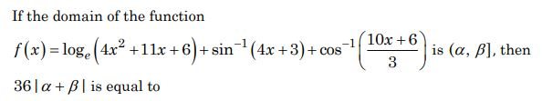
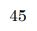
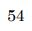
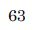
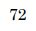
Hint 1: Each of the three parts has its own condition. Which conditions must hold together?
Hint 2: Need (4x + 3)(x + 2) > 0, -1 ≤ 4x + 3 ≤ 1 and -1 ≤ (10x + 6)/3 ≤ 1. Solve each, then intersect.
What this tests: Domain of a sum of functions: intersection of log and inverse-trig domains.
If this felt hard: Intersecting three intervals is easy to rush. Revise domains of log, sin-1 and cos-1 (Relations and Functions, Inverse Trigonometric Functions) and draw a number line each time.
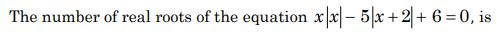
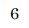
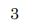
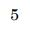
Hint 1: The signs of x and of x + 2 change at x = 0 and x = -2. How many cases does that give?
Hint 2: Cases: x ≥ 0 gives x2 - 5x - 4 = 0; -2 ≤ x < 0 gives x2 + 5x + 4 = 0; x < -2 gives x2 - 5x - 16 = 0. Keep only roots inside each case's range.
What this tests: Equations with modulus: split at the points where each expression inside |…| changes sign.
If this felt hard: The trap is forgetting to check each root against its own case range. Practise modulus equations from Complex Numbers and Quadratic Equations, always writing the range next to each case.
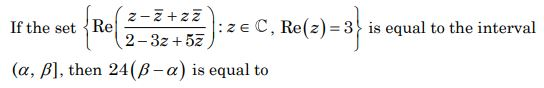
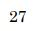
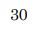
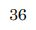
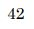
Hint 1: Put z = 3 + iy. Then z - z̄ and z z̄ are simple in terms of y.
Hint 2: With z = 3 + iy: numerator = 9 + y2 + 2iy, denominator = 8 - 8iy. Multiply top and bottom by (1 + iy) and take the real part.
What this tests: Real part of a complex expression on a line Re(z) = 3, then the range of a rational function.
If this felt hard: Finding the range after the algebra is the tricky part. Revise Complex Numbers (conjugate, real part) and range of functions by rewriting as constant + k/(1 + t).
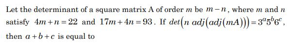
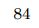
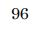
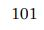
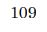
Hint 1: First find m and n. Then use the rules for det(kA), det(adj B) and adj(adj B).
Hint 2: m = 5, n = 2, |A| = 3. For order 5: |kB| = k5|B| and |adj(adj B)| = |B|(5-1)^{2} = |B|16.
What this tests: Determinant of a scalar multiple and of repeated adjoints.
If this felt hard: The exponents (n-1)2 and the kn factor are easy to mix up. Revise properties of adjoint in Determinants and Matrices.
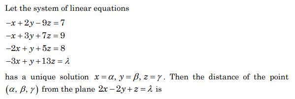
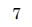
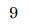
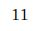
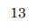
Hint 1: Three of the equations already fix x, y, z. Which one then gives λ?
Hint 2: Solve the first three equations; then λ = -3x + y + 13z. Use distance = |ax + by + cz - d| / √(a2 + b2 + c2).
What this tests: Consistent system of 4 equations in 3 unknowns, then point-to-plane distance.
If this felt hard: Notice that λ is decided by the solution, not the other way round. Revise solving linear systems and the distance formula in Three Dimensional Geometry.
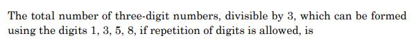
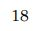
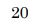
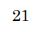
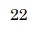
Hint 1: A number is divisible by 3 when its digit sum is. Sort the digits by remainder on division by 3.
Hint 2: Remainders: 3 → 0, 1 → 1, 5 and 8 → 2. Count ordered triples of digits whose remainders add to a multiple of 3.
What this tests: Counting with repetition using remainders (divisibility by 3).
If this felt hard: Missing a case like (2,2,2) is the usual slip. Revise Permutations and Combinations: split into cases by remainder and list them all before counting.
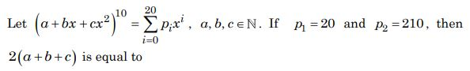
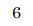
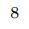
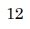
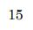
Hint 1: p1 and p2 are the coefficients of x and x2. Which terms of the expansion can give them?
Hint 2: p1 = 10a9b and p2 = 45a8b2 + 10a9c. Use that a, b, c are natural numbers.
What this tests: Coefficients in a multinomial expansion.
If this felt hard: The x2 term comes from two different choices; missing the cx2 route is common. Revise the Binomial Theorem and general multinomial terms.
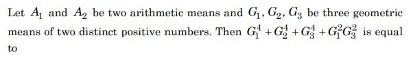
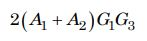
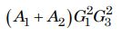
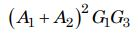
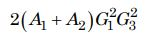
Hint 1: Call the numbers a and b and write the three GMs with a common ratio r, where b = ar4.
Hint 2: G1 = ar, G2 = ar2, G3 = ar3, A1 + A2 = a + b = a(1 + r4). Factor the left side.
What this tests: Arithmetic and geometric means inserted between two numbers.
If this felt hard: Writing the means in terms of a and r first keeps this short. Revise inserting AMs and GMs in Sequences and Series.
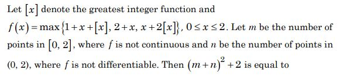
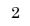
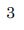
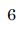
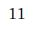
Hint 1: Work out f on [0, 1), on [1, 2) and at x = 2 separately.
Hint 2: On [0, 1): max{1 + x, 2 + x, x}. On [1, 2): max{2 + x, 2 + x, x + 2}. At x = 2: max{5, 4, 6}.
What this tests: Continuity and differentiability of max of functions with the greatest integer function.
If this felt hard: It is tempting to expect breaks at x = 1, but here the pieces agree. Revise Continuity and Differentiability with [x]: check each interval and each integer point separately.
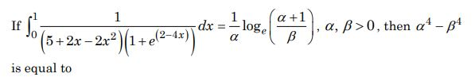
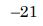
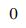
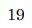
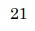
Hint 1: The limits are 0 and 1. What happens to the integrand when x is replaced by 1 - x?
Hint 2: 5 + 2x - 2x2 is unchanged by x → 1 - x, and 1/(1 + et) + 1/(1 + e-t) = 1, so 2I = ∫01 dx/(5 + 2x - 2x2).
What this tests: Definite integrals using the property ∫0a f(x) dx = ∫0a f(a - x) dx.
If this felt hard: Seeing the King's property and then matching the given log form are both steps where people stop. Revise properties of definite integrals and standard integrals of 1/(a2 - x2).
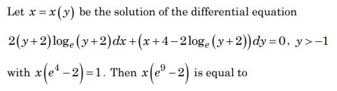
Hint 1: Treat x as the dependent variable. Is the equation linear in x?
Hint 2: dx/dy + x/(2(y + 2)log(y + 2)) = (2log(y + 2) - 4)/(2(y + 2)log(y + 2)). With t = log(y + 2), the integrating factor is √t.
What this tests: Linear differential equation in x (as a function of y).
If this felt hard: Spotting that the equation is linear in x, not in y, is the key step. Revise linear differential equations of the form dx/dy + Px = Q.
Hint 1: The orthocentre lies on every altitude. Two altitudes are enough.
Hint 2: Altitude from A is perpendicular to BC: 5x + 3y + 6 = 0. Altitude from B is perpendicular to AC: x + 12y - 23 = 0.
What this tests: Orthocentre as the meeting point of two altitudes.
If this felt hard: The fractions are untidy, so arithmetic slips are likely; keep α and β as fractions over 57. Revise Straight Lines: perpendicular lines through a point.
Hint 1: Find both centres and radii, then compare the distance between centres with r1 + r2.
Hint 2: C1 = (9, 15/2), r1 = 5/2; C2 = (3, 3), r2 = 5. If the distance equals r1 + r2 the circles touch externally.
What this tests: Number of common tangents from the position of two circles.
If this felt hard: Remember: apart 4, touching outside 3, cutting 2, touching inside 1, one inside the other 0. Revise Conic Sections: circles.
Hint 1: First find the plane through the three points: you need its normal.
Hint 2: Normal = (10, 5, 7) × (10, 0, 4) ∝ (2, 3, -5); the plane is 2x + 3y - 5z = 7. Foot Q = P - k(2, 3, -5) with k = (2·3 + 3·(-2) - 5·(-9) - 7)/38.
What this tests: Plane through three points and foot of the perpendicular from a point.
If this felt hard: A sign slip in the cross product changes everything here; check the plane with all three points. Revise Three Dimensional Geometry: equation of a plane and foot of perpendicular.
Hint 1: Shortest distance between skew lines uses the cross product of the two directions.
Hint 2: SD = |(a2 - a1) · (b1 × b2)| / |b1 × b2| with b1 × b2 = (4, 3, -12).
What this tests: Shortest distance between two skew lines.
If this felt hard: Both signs of the modulus give a value of λ; missing one is the usual trap. Revise Three Dimensional Geometry: shortest distance formula.
Hint 1: Three vectors are coplanar when their scalar triple product is zero.
Hint 2: det[[λ, -1, 1], [1, 2, μ], [3, -4, 5]] = 10λ + 4λμ - 3μ - 5 = 0, together with λ = μ + 5.
What this tests: Coplanarity of three vectors via the scalar triple product.
If this felt hard: Expanding the 3 × 3 determinant carefully is the main work. Revise Vector Algebra: scalar triple product and coplanarity.
Hint 1: Use position vectors a, b, c, d for A, B, C, D, and write E and F as midpoints.
Hint 2: AB - BC + AD - DC = 2(b + d) - 2(a + c), and E = (a + c)/2, F = (b + d)/2.
What this tests: Vector addition with position vectors and midpoints.
If this felt hard: The direction FE (from F to E) gives the minus sign; 4 is the tempting wrong answer. Revise Vector Algebra: position vectors and the section formula.
Hint 1: The die decides how many balls are drawn. Use total probability over the six faces.
Hint 2: P = (1/6) Σk=16 C(6, k)/C(10, k).
What this tests: Theorem of total probability.
If this felt hard: Adding six fractions invites slips; a common denominator of 210 keeps it tidy. Revise Probability: total probability.
Hint 1: Rebuild Σx and Σx2 from the given mean and standard deviation, then correct them.
Hint 2: Σx = 200, Σx2 = 10(82 + 202) = 4640. Replace 50 by 40 in both sums.
What this tests: Correcting mean and variance after a wrong observation.
If this felt hard: Forgetting to correct Σx2 (not just Σx) is the usual trap. Revise Statistics: variance = Σx2/n - (mean)2.
Note: The question says the standard deviation is 8, so the original variance is 64.
Hint 1: First decide when p ∧ (q ∧ ~(p ∧ q)) can be true at all.
Hint 2: For it to be true you need p, q and ~(p ∧ q) all true at once. Is that possible? If never, its negation is a tautology.
What this tests: Negation of a compound statement; tautology and contradiction.
If this felt hard: A truth table settles this quickly. Revise Mathematical Reasoning: negation and tautologies.
Note: Mathematical reasoning is no longer in the current JEE Main syllabus.
Hint 1: List the possible values of 4c + 5d and of 2a + 3b for numbers 1 to 4. Which values match?
Hint 2: 2a + 3b goes from 5 to 20, 4c + 5d from 9 to 36. Only common values ≤ 20 matter: 9, 13, 14, 17, 18, 19.
What this tests: Counting elements of a relation by listing values.
If this felt hard: A table of values avoids missing a pair. Revise Relations: counting ordered pairs.
Hint 1: The digits are 0 to 7, all different, and 7 must appear. Which pair contains the 7?
Hint 2: If 7 is paired with x, the other pair {y, z} (from 0 to 6, different from x) has y + z = 7 + x. Count the unordered choices, then the arrangements.
What this tests: Counting with conditions on digits (permutations with restrictions).
If this felt hard: Forgetting that 0 is allowed, or that the pairs can swap places, gives the wrong count. Revise Permutations and Combinations: case-wise counting.
Note: 'Greatest digit is 7' is read as: 7 appears and no digit exceeds 7. 0 is allowed in a PIN.
Hint 1: Look at powers of 3 modulo 7. When is 3n ≡ 3?
Hint 2: 3n - 3 ≡ 0 (mod 7) means 3n-1 ≡ 1 (mod 7). The powers of 3 repeat every 6 modulo 7.
What this tests: Remainders of powers (modular arithmetic / binomial theorem).
If this felt hard: Finding the cycle of remainders is the key idea. Revise divisibility problems in the Binomial Theorem chapter.
Hint 1: Each bracket looks like ak + ak-1b + … + bk with a = 1/2, b = -1/3. Is there a closed form?
Hint 2: The k-th bracket is (ak+1 - bk+1)/(a - b). Sum two geometric series.
What this tests: Sum of an infinite series using an - bn = (a - b)(…) and geometric series.
If this felt hard: Recognising the pattern inside each bracket is the hard step. Revise Sequences and Series: infinite GP.
Hint 1: AB is fixed. So you only need the extreme values of BC + CA as C moves along y = 4.
Hint 2: Minimum of BC + CA: reflect B in the line y = 4 and join to A. The function is convex, so the maximum is at an end, t = 0 or t = 4.
What this tests: Minimising a sum of distances (reflection), maximum at an endpoint.
If this felt hard: The reflection trick turns calculus into geometry here. Revise Straight Lines (image of a point) and maxima and minima on a closed interval.
Hint 1: Try x = 1/t, or think about which substitution turns √(4 - 3x2) into something simple.
Hint 2: With x = 1/t and then u2 = 4t2 - 3, the integral becomes -∫ du/(3u2 + 25). This gives f(x) = (1/(5√3)) tan-1(5x/(√3 √(4 - 3x2))).
What this tests: Indefinite integral of the form 1/((a + bx2)√(c - dx2)).
If this felt hard: This form needs the reciprocal substitution; it is a known standard but easy to forget. Revise Integrals: special substitutions.
Hint 1: Sketch it: the parabola, the line x + y = 3 and the x-axis close a region. Where is the circle's centre?
Hint 2: The region area is ∫03/2 (3 - y - 2y2/3) dy. The circle's centre (3, 0) is on the line, so the part of the circle inside the region is a sector of angle π/4.
What this tests: Area between curves, removing a circular sector.
If this felt hard: Seeing that only a sector (not a half or quarter circle) lies inside is the tricky part. Revise Application of Integrals and draw the figure first.
Hint 1: The minor axis ends (on the y-direction) and a focus form an angle. Use that to link b and ae.
Hint 2: 60° at the focus means tan 30° = b/(ae), so ae = √3 b. Then a2 = b2 + a2e2 and latus rectum 2b2/a = 1/2.
What this tests: Ellipse: relation between a, b, e and the latus rectum.
If this felt hard: The centre (1, 0) does not affect lengths. Revise Conic Sections: ellipse, angle subtended at a focus.
Hint 1: A plane containing the line of intersection of two planes is P1 + kP2 = 0. Which condition fixes k?
Hint 2: Normal (2 + 5k, 1 - 3k, -1 + 4k) must be perpendicular to (2, 4, 5): k = -1/6. Then move from A along (-3, 4, 12) until you hit the plane.
What this tests: Plane through the intersection of two planes; distance measured along a given line.
If this felt hard: The direction (2 - z)/(-12) means z increases with +12; sign slips here are common. Revise Three Dimensional Geometry: family of planes.
Hint 1: x = y = z means a point (t, t, t). Put it into both planes.
Hint 2: t(sin A + sin B + sin C) = 18 and t(sin 2A + sin 2B + sin 2C) = 9. In a triangle Σ sin A = 4Π cos(A/2) and Σ sin 2A = 4Π sin A.
What this tests: Conditional trigonometric identities in a triangle.
If this felt hard: Knowing the two triangle identities is the whole question. Revise Trigonometric Functions: identities for A + B + C = π.
Hint 1: In SHM, F = -kx and a = -ω2x. Read each statement against these.
Hint 2: Acceleration has magnitude ω2|x|: largest where |x| is largest. Speed is ω√(A2 - x2): largest at x = 0.
What this tests: Force, acceleration and velocity in simple harmonic motion.
If this felt hard: Mixing up where speed and acceleration are largest is common. Revise Oscillations: SHM equations.
Hint 1: Average kinetic energy per molecule depends on one quantity only. Which one?
Hint 2: Average translational KE per molecule = (3/2)kT, the same for every ideal gas at the same temperature.
What this tests: Kinetic theory: average kinetic energy depends only on temperature.
If this felt hard: The extra data tempt you to calculate. Revise Kinetic Theory of Gases: KE per molecule versus rms speed.
Note: Argon is monatomic and H_{2} diatomic; the question asks for average (translational) KE per molecule, the usual JEE reading.
Hint 1: Work done in a cycle is the area enclosed on the P-V graph. What shape is it?
Hint 2: The cycle C(2, 100) → D(2, 400) → E(4, 100) → C is a triangle; area = (1/2) × base × height. Clockwise means positive.
What this tests: Work in a cyclic process from a P-V diagram.
If this felt hard: Using the full rectangle (600 J) or half of the wrong side gives a wrong value. Revise Thermodynamics: work as area under/inside P-V curves.
Note: Coordinates read from the figure: C(2, 100), D(2, 400), E(4, 100).
Hint 1: Extension of a wire depends on F, L and the area. How does each change?
Hint 2: ΔL = FL/(AY) with A = πr2. Compare 2f × 2L / (4A).
What this tests: Young's modulus and extension of a wire.
If this felt hard: Forgetting that area goes as r2 gives 2l. Revise Mechanical Properties of Solids.
Hint 1: g changes with height here, so mgh is not enough. Use energy conservation with the gravitational potential.
Hint 2: -GMm/(2R) = -GMm/R + (1/2)mv2, and GM = gR2.
What this tests: Energy conservation with gravitational potential energy.
If this felt hard: Using v = √(2gh) with h = R gives √(2gR), a common slip because g is not constant over that height. Revise Gravitation: potential energy.
Hint 1: The two particles stay opposite each other on the circle. How far apart are they?
Hint 2: Separation is 2a. Gravity supplies the centripetal force: Gm2/(2a)2 = mω2a.
What this tests: Circular motion under mutual gravitational attraction.
If this felt hard: Using a instead of 2a for the separation gives √(Gm/a3). Revise Gravitation and circular motion.
Hint 1: The angle is measured from the y-axis. Which component uses cos 30°?
Hint 2: y-component = A cos 30°, x-component = A sin 30°.
What this tests: Resolving a vector into components.
If this felt hard: Measuring the angle from the x-axis by habit gives 6. Revise Motion in a Plane: components.
Hint 1: Velocity is the rate of change of position.
Hint 2: v = dx/dt = 10t - 4.
What this tests: Velocity from a position-time relation.
If this felt hard: A quick one; just differentiate carefully. Revise Motion in a Straight Line.
Hint 1: Match powers of M, L and T on both sides.
Hint 2: [LT-1] = [L]a[LT-2]b[ML-3]c. M: c = 0; T: -2b = -1; L: a + b - 3c = 1.
What this tests: Dimensional analysis.
If this felt hard: Revise Units and Measurement: deriving a relation by dimensions.
Hint 1: Force is along acceleration. Differentiate the position twice.
Hint 2: a = d2r/dt2; only the 15t2 term survives.
What this tests: Newton's second law with vector kinematics.
If this felt hard: Looking at velocity instead of acceleration gives 'x-y plane'. Revise Motion in a Plane and Laws of Motion.
Hint 1: For a short dipole far away, how do the axial and equatorial fields depend on r?
Hint 2: Eequatorial = kp/r3.
What this tests: Electric field of a dipole.
If this felt hard: Confusing with a point charge (1/r2) is the usual slip. Revise Electric Charges and Fields: dipole field.
Hint 1: Each antenna can 'see' up to its own horizon. Add the two horizon distances.
Hint 2: d = √(2RhT) + √(2RhR).
What this tests: Line-of-sight communication range.
If this felt hard: Picking one of the two parts (48 or 56) is the trap. Revise Communication Systems: space wave range.
Note: Communication systems is no longer in the current JEE Main syllabus.
Hint 1: First decide which diodes are forward biased, from the battery's direction.
Hint 2: With the battery's + terminal on the right, D3 and D1 conduct and D2 is reverse biased. Two paths: 10 Ω, and 10 Ω + 10 Ω.
What this tests: Ideal diodes in a resistor network.
If this felt hard: Deciding the bias of each diode is the step to practise. Revise Semiconductor Electronics: ideal diode in circuits.
Note: Figure reading: the battery's + terminal is taken on the right, consistent with the current I shown flowing down the left wire and with the key; the other polarity gives 0.5 A, not an option.
Hint 1: How many half-lives fit into 15 years?
Hint 2: After n half-lives, the fraction left is (1/2)n. The question asks what has decayed.
What this tests: Radioactive decay and half-life.
If this felt hard: Answering 1/8 (the part left) is the classic misread. Revise Nuclei: half-life.
Hint 1: How does the de Broglie wavelength depend on kinetic energy?
Hint 2: λ = h/√(2mE), so λ ∝ 1/√E.
What this tests: de Broglie wavelength and kinetic energy.
If this felt hard: Revise Dual Nature of Radiation and Matter.
Hint 1: Where is the first minimum of a single slit?
Hint 2: a sin θ = λ for the first minimum.
What this tests: Single-slit diffraction minima.
If this felt hard: Using the bright-fringe condition (3λ/2) is a common mix-up. Revise Wave Optics: diffraction.
Hint 1: Put the four waves in order of wavelength: X-ray, UV, IR, microwave.
Hint 2: Microwave ~0.1 m to 1 mm; IR 1 mm to 700 nm; UV 400 nm to 1 nm; X-ray 1 nm to 10-3 nm.
What this tests: Electromagnetic spectrum: wavelength ranges.
If this felt hard: Revise Electromagnetic Waves: the table of ranges in NCERT.
Hint 1: Find the steady current first, then use the induced emf formula.
Hint 2: I = 12/6 = 2 A falls to zero in 1 ms; e = L ΔI/Δt.
What this tests: Self-inductance and induced emf.
If this felt hard: Revise Electromagnetic Induction: e = L dI/dt.
Hint 1: A voltmeter needs a large resistance in series; an ammeter a small one in parallel (a shunt).
Hint 2: Voltmeter: R = V/Ig - G. Ammeter: r = IgG/(I - Ig).
What this tests: Converting a galvanometer into a voltmeter and an ammeter.
If this felt hard: Using I instead of (I - Ig) in the shunt gives 5.4 Ω. Revise Moving Charges and Magnetism: galvanometer conversion.
Hint 1: Check each statement against what you know about series resistors and resistivity.
Hint 2: Series: R = R1 + R2 + … Resistivity of metals: ρ = ρ0(1 + α ΔT).
What this tests: Series combination and temperature dependence of resistivity.
If this felt hard: Revise Current Electricity.
Hint 1: The mass and the linear density tell you the length of the string.
Hint 2: L = 18 g / (20 g/m) = 0.9 m. Fundamental: f = v/(2L).
What this tests: Fundamental mode of a string fixed at both ends.
If this felt hard: Revise Waves: standing waves on strings.
Hint 1: Two things raise the pressure inside the bubble above atmospheric. What are they?
Hint 2: Pin - Patm = ρgh + 2T/r (an air bubble in a liquid has one surface).
What this tests: Excess pressure in a bubble inside a liquid.
If this felt hard: Using 4T/r (soap bubble, two surfaces) gives 1300. Revise Mechanical Properties of Fluids.
Hint 1: Radius of gyration k is defined by I = mk2.
Hint 2: Solid sphere: k = R√(2/5). Solid cylinder about its axis: k = R/√2.
What this tests: Radius of gyration of standard bodies.
If this felt hard: Revise System of Particles and Rotational Motion: moments of inertia.
Hint 1: The force changes with x, so W is an integral.
Hint 2: W = ∫ F dx from 2 to 4.
What this tests: Work done by a variable force.
If this felt hard: Revise Work, Energy and Power.
Hint 1: How are the three capacitors connected to the 10 V source?
Hint 2: All three are in parallel across 10 V: Q = (C1 + C2 + C3)V.
What this tests: Capacitors in parallel.
If this felt hard: Revise Electrostatic Potential and Capacitance.
Note: Figure reading: all three capacitors join the same two vertical wires, so they are in parallel.
Hint 1: First, second and third excited states: which values of n are these?
Hint 2: A, B, C are n = 2, 3, 4. 1/λ ∝ (1/n12 - 1/n22).
What this tests: Hydrogen spectrum: Rydberg formula.
If this felt hard: Taking 'first excited' as n = 1 is the usual slip (n = 1 is the ground state). Revise Atoms.
Hint 1: Use the prism formula at minimum deviation.
Hint 2: μ = sin((A + δm)/2)/sin(A/2) with A = 60°.
What this tests: Minimum deviation in a prism.
If this felt hard: Revise Ray Optics: prism formula.
Hint 1: A rotating rod cuts magnetic field lines. What is the emf between its ends?
Hint 2: e = (1/2)Bωl2, ω = 2π × 210/60 rad/s.
What this tests: Motional emf in a rotating rod.
If this felt hard: Forgetting the 1/2 doubles the answer. Revise Electromagnetic Induction.
Hint 1: The orbiting electron is a tiny current loop. What field does a moving charge make at the centre?
Hint 2: B = μ0ev/(4πr2) (same as I = ev/(2πr) in B = μ0I/(2r)).
What this tests: Magnetic field of an orbiting electron.
If this felt hard: Revise Moving Charges and Magnetism: field at the centre of a loop.
Hint 1: The battery is across the left and right corners. Find the potential at A and at B along each branch.
Hint 2: Each branch has 6 Ω, so 1.5 A flows in each. VA = 9 - 1.5 × 2, VB = 9 - 1.5 × 4.
What this tests: Potential difference across points in a resistor network.
If this felt hard: Revise Current Electricity: potential drops along branches.
Hint 1: In CsCl the Cs+ sits at the body centre and Cl- at the corners. Along which line do they touch?
Hint 2: Cation and anion touch along the body diagonal: √3 a = 2(r+ + r-).
What this tests: Radius relation in a CsCl (body-centred) unit cell.
If this felt hard: a/2 is the NaCl relation (ions touching along an edge). Revise Solid State: relations between a and r.
Note: Solid state is no longer in the current JEE Main syllabus.
Hint 1: What did Bohr assume about angular momentum, and what does the uncertainty principle say about exact orbits?
Hint 2: Bohr: mvr = nh/2π. Heisenberg: position and momentum cannot both be known exactly.
What this tests: Bohr's postulates and their limitation (uncertainty principle).
If this felt hard: Revise Structure of Atom: limitations of Bohr's model.
Hint 1: Think about lone pairs (shape of NF3), bond orders (N2, O2) and electronegativity (H2S vs H2O).
Hint 2: NF3 has a lone pair on N. Bond order: N2 = 3, O2 = 2. Isoelectronic species (N2, CO, NO+, CN-) share the same MO filling.
What this tests: VSEPR shape, bond order and bond length, dipole moment.
If this felt hard: Statement (A) is the trap: NF3 is pyramidal like NH3. Revise Chemical Bonding: VSEPR and MO bond order.
Note: Statement (C) is the usual JEE/NCERT generalisation (it holds for diatomic species such as N_{2}, CO, NO^{+}, CN^{-}).
Hint 1: Can an acid solution, however dilute, have pH above 7? And what is pH at half-neutralisation?
Hint 2: Very dilute HCl: add the H+ from water. Half-neutralised weak acid: [salt] = [acid], so pH = pKa.
What this tests: pH of very dilute acid, conjugate pairs, Kw and buffers.
If this felt hard: pH = -log(10-8) = 8 is the classic trap. Revise Equilibrium: ionic equilibrium.
Hint 1: Calcination and roasting both heat an ore. Which one needs air and changes sulphides?
Hint 2: Calcination: heating to drive out water or CO2, in little or no air. Roasting: heating a sulphide ore in air.
What this tests: Calcination versus roasting.
If this felt hard: Revise General Principles and Processes of Isolation of Elements (NCERT).
Note: Metallurgy is no longer in the current JEE Main syllabus.
Hint 1: Write the water-gas shift reaction.
Hint 2: CO + H2O → CO2 + H2 (with a catalyst).
What this tests: Preparation of hydrogen: water-gas shift reaction.
If this felt hard: Revise Hydrogen (NCERT): preparation of dihydrogen.
Note: The Hydrogen chapter is no longer in the current JEE Main syllabus.
Hint 1: Do Be and Mg salts colour a flame?
Hint 2: Be and Mg hold their electrons tightly (small size), so visible light is not enough to excite them.
What this tests: Flame colours of alkaline earth metals.
If this felt hard: Revise The s-Block Elements (NCERT): flame colouration.
Note: The s-block chapter is no longer in the current JEE Main syllabus.
Hint 1: This is a fact from NCERT's section on cement.
Hint 2: NCERT: for good quality cement, the ratio of silica to alumina should be between 2.5 and 4.
What this tests: Composition of Portland cement.
If this felt hard: Pure recall; revise The s-Block Elements (NCERT, cement).
Note: From the older NCERT s-block chapter, no longer in the current JEE Main syllabus.
Hint 1: Draw each structure. How many O atoms bridge two P atoms?
Hint 2: H4P2O7: two PO4 units joined by one O. (HPO3)3: a ring of three P and three O. P4O10: each edge of the P4 tetrahedron has a bridging O.
What this tests: Structures of oxoacids and oxides of phosphorus.
If this felt hard: Revise The p-Block Elements: oxoacids of phosphorus.
Hint 1: All four are +3 aqua ions with the same ligand. What decides Δo then, and is it the same as CFSE?
Hint 2: Δo is the measured t2g-eg gap. CFSE is the energy gained from filling: d3 (t2g3) gets -1.2Δo.
What this tests: Crystal field splitting (Δo) versus crystal field stabilisation energy.
If this felt hard: Ask your teacher how this question should be read.
Note: Disputed. NTA's final key is (2) [Cr(H_{2}O)_{6}]^{3+}. That matches comparing CFSE (crystal field STABILISATION energy): Cr^{3+} t_{2g}^{3} gives -1.2Δ_{o}, the largest of the four (Ti^{3+} -0.4, high-spin Mn^{3+} -0.6, high-spin Fe^{3+} 0). Read literally as the splitting Δ_{o}, measured values do not make Cr^{3+} the largest: Ti^{3+} 20 300, Cr^{3+} 17 400, Mn^{3+} 21 000, Fe^{3+} 14 300 cm^{-1} (Shriver, Atkins and Langford, Inorganic Chemistry, 2nd ed., Table via LibreTexts 'The Effect of the Metal Ion on d-Orbital Splitting', checked 2026-10-09). Mn^{3+} is Jahn-Teller distorted, so a teacher may prefer Ti^{3+} (1); either way not (2). NCERT gives no Δ_{o} values for these ions. Owner/teacher to decide.
Hint 1: What does photochemical smog need to form?
Hint 2: It needs sunlight, warmth, and NOx plus hydrocarbons from traffic.
What this tests: Conditions for photochemical smog.
If this felt hard: Revise Environmental Chemistry: classical vs photochemical smog.
Note: Environmental chemistry is no longer in the current JEE Main syllabus.
Hint 1: Which carbonyl in the triketone is most electron-poor and so most ready to add water?
Hint 2: The central C=O sits between two other C=O groups; water adds there to give a stable gem-diol (ninhydrin).
What this tests: Hydration of a carbonyl group; stable gem-diols.
If this felt hard: Gem-diols are usually unstable, which is why this feels odd. Revise Aldehydes, Ketones: nucleophilic addition and stable hydrates.
Note: Figure reading of the option structures; option 4 is ninhydrin.
Hint 1: Rank the substituents by how strongly they push electrons into the ring.
Hint 2: -NMe2 > -OCH3 (strong +R) > -CH3 (+I, hyperconjugation) > -H > -CF3 (strong -I).
What this tests: Activating and deactivating groups in electrophilic aromatic substitution.
If this felt hard: Revise Hydrocarbons/Amines: effect of substituents on EAS.
Hint 1: Cl is deactivating but which positions does it direct to? Which of those is less crowded?
Hint 2: Cl is ortho/para directing; the bulky acyl group prefers para.
What this tests: Directing effect of halogens in Friedel-Crafts acylation.
If this felt hard: Revise Haloalkanes and Haloarenes: electrophilic substitution in haloarenes.
Hint 1: In the starting material, where do CH3 and NO2 both direct a bromine? Do the bromination while CH3 is still there.
Hint 2: Br2/Fe first (ortho to CH3, meta to NO2); then reduce NO2, diazotise, Sandmeyer with CuCl, and finally oxidise CH3 to COOH.
What this tests: Planning a synthesis on a benzene ring (order of reagents).
If this felt hard: Oxidising CH3 first (option 2) makes the ring doubly deactivated and changes where Br goes. Revise Amines (diazonium salts) and directing effects.
Hint 1: Hydroboration-oxidation adds water in which direction? Then what do PCC and a Grignard do?
Hint 2: Propene → propan-1-ol (anti-Markovnikov) → propanal (PCC) → + CH3MgBr → secondary alcohol.
What this tests: Hydroboration, PCC oxidation and Grignard addition.
If this felt hard: Taking Markovnikov addition (propan-2-ol → acetone) leads to the tertiary alcohol in option 1. Revise Alcohols, Phenols and Ethers.
Hint 1: A at 0-5 °C is a diazonium salt. What does it do with an activated aromatic ring?
Hint 2: Benzenediazonium chloride couples at the para position of N,N-dimethylaniline to give an azo dye.
What this tests: Diazotisation and azo coupling.
If this felt hard: Revise Amines: reactions of diazonium salts.
Hint 1: Match each monomer to its polymer's common name.
Hint 2: Teflon from CF2=CF2; Orlon (PAN) from acrylonitrile; Nylon-6 from caprolactam; natural rubber is polyisoprene.
What this tests: Common polymers and their monomers.
If this felt hard: Revise Polymers (NCERT).
Note: Polymers is no longer in the current JEE Main syllabus.
Hint 1: Amino acids exist as zwitterions. What does that mean for their solubility?
Hint 2: Zwitterions are ionic: high melting point, crystalline, soluble in water, not in non-polar solvents like benzene.
What this tests: Properties of amino acids (zwitterions).
If this felt hard: Revise Biomolecules: amino acids.
Hint 1: In paper chromatography, what stays still on the paper?
Hint 2: NCERT: the water trapped in the paper acts as the stationary phase.
What this tests: Stationary and mobile phases in paper chromatography.
If this felt hard: Saying 'the paper itself' is the tempting slip. Revise Organic Chemistry: Some Basic Principles (chromatography).
Hint 1: Only the chlorides outside the coordination sphere precipitate with AgNO3.
Hint 2: [Cr(H2O)5Cl]Cl2 gives 2 Cl- per formula unit.
What this tests: Ionisable chloride in a Werner complex.
If this felt hard: Counting all 3 Cl gives 6 mL. Revise Coordination Compounds: Werner's theory.
Hint 1: At the melting point, solid and liquid are in equilibrium. What is ΔG then?
Hint 2: ΔG = 0, so T = ΔH/ΔS.
What this tests: ΔG = 0 at a phase transition.
If this felt hard: Forgetting to change kJ to J gives about 1 K. Revise Thermodynamics: ΔG = ΔH - TΔS.
Hint 1: 30% (w/v) means 30 g in 100 mL of solution. Use the density to find the water.
Hint 2: Mass of 100 mL = 120 g, so water = 90 g = 5 mol and glucose = 1/6 mol. P = P° × xwater.
What this tests: Raoult's law with a w/v concentration.
If this felt hard: Taking 100 g water (ignoring the density) gives a slightly different value. Revise Solutions: Raoult's law.
Note: Exact value 23.23; NTA's key is 23.
Hint 1: Separate conductivity (κ) from molar conductivity (Λm). How does each change on dilution?
Hint 2: On dilution, κ falls (fewer ions per cm3) but Λm rises. For weak electrolytes Λm rises because the degree of dissociation increases.
What this tests: Variation of conductivity and molar conductivity with concentration.
If this felt hard: Mixing up κ and Λm is the usual trap. Revise Electrochemistry: conductance.
Hint 1: Same rate with the same A means the exponent Ea/RT is the same in both cases.
Hint 2: Ea(cat)/300 = 300/600, then Ea(backward) = Ea(forward) - ΔH.
What this tests: Arrhenius equation and activation energies of forward and backward reactions.
If this felt hard: Adding ΔH instead of subtracting gives 170. Revise Chemical Kinetics.
Note: Assumes the catalyst does not change A, the usual JEE convention.
Hint 1: Coagulating value is millimoles of electrolyte per litre of sol.
Hint 2: mmol of NaCl = 20 × 0.5 = 10 in 200 mL of sol. Scale to 1 L.
What this tests: Coagulating (flocculation) value.
If this felt hard: Revise Surface Chemistry: coagulation.
Note: Surface chemistry is no longer in the current JEE Main syllabus. Computed per litre of sol, as NCERT defines it; NTA's key agrees.
Hint 1: Count the electrons in each species.
Hint 2: Atomic numbers: O 8, F 9, Na 11, Mg 12, Al 13. Add electrons for negative charge, remove for positive.
What this tests: Isoelectronic species.
If this felt hard: Revise Classification of Elements: isoelectronic species.
Hint 1: What does permanganate become in acid?
Hint 2: MnO4- → Mn2+ in acidic medium.
What this tests: Permanganate as an oxidising agent in acid.
If this felt hard: In neutral or weakly alkaline solution it would go to MnO2 (change 3). Revise The d- and f-Block Elements: KMnO4.
Hint 1: Co2+ is d7 and water is a weak-field ligand. Fill t2g and eg accordingly.
Hint 2: High spin d7: t2g5 eg2.
What this tests: Electron filling in an octahedral high-spin complex.
If this felt hard: Counting all 3 unpaired electrons answers a different question. Revise Coordination Compounds: crystal field theory.
Hint 1: Use the usual oxidation states of O and Cl.
Hint 2: CrO2Cl2: x + 2(-2) + 2(-1) = 0.
What this tests: Oxidation state calculation.
If this felt hard: Revise Redox Reactions.